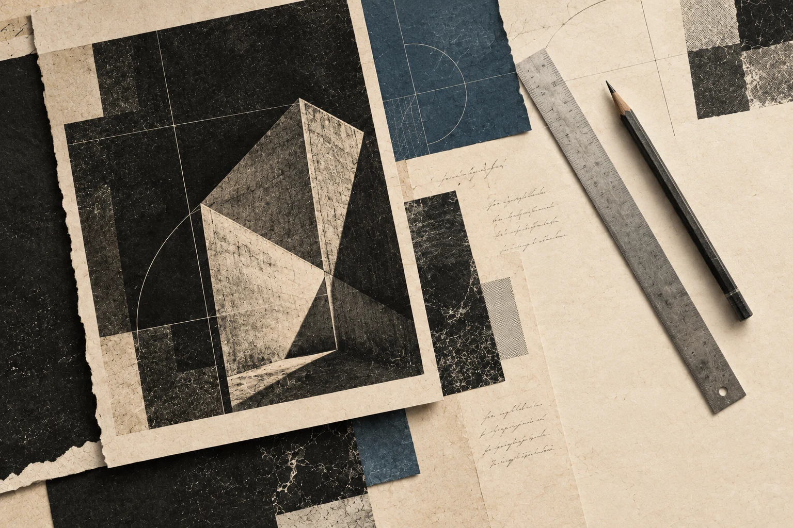

Enterprise contracts. Investor conversations. A market that knows the people behind the company.
£3M
in new client investment
An asset manager asking investors to commit £100,000 needs more than reach. Cur8 attributes £3 million in new investment to its founders’ LinkedIn channel.
Inside the work +
We ran the channel end to end around the firm’s views on markets, risk and investing. Prospective clients arrived at the first conversation already familiar with the thinking behind the business.
Ibrahim KhanCo-founder & CEO, Cur8 Capital
314inbound enquiries
$1.3M
enterprise contract
In healthcare, trust comes before procurement. Sahl grew from one hospital pilot to seven enterprise contracts as we built the two founders’ presence.
Inside the work +
We ran Ammar and Dr Umair Khan’s LinkedIn channels together. Their case study also records a $2 million investment from a VC who had followed their content for months.
Ammar KhanCo-founder & CEO, Sahl AI
1 → 7hospital pilot to enterprise contracts
500K+
impressions in three months
Two founders emerging from stealth into the accounting market. A coordinated narrative brought their launch into the feeds of partners, investors and tax leaders.
Inside the work +
We built the narrative before launch and coordinated both founders around the funding announcement. The case study records more than 3,000 engagements across 50 posts.
Daniel FraaiCo-founder, Ylookup
50founder posts published
Founders backed by
How it Works

01
Onboarding Sprint
We align on goals, voice, and strategy.
1 of 6
Trusted with their reputation.
Photo detailsOriginal profile photo
“Draper is quietly becoming indispensable. That's the best compliment I can give.”
Break clause built into every contract — our clients stay because the results speak for themselves.
FAQ
Will it actually sound like me?+
Yes. Draper ingests your existing content, calls, and interviews to learn your voice patterns. Our onboarding call captures exactly what we need to get your unique voice right. Your Content Engineer reviews everything before it posts. If it doesn't sound right, it doesn't go live.
How much time does this take?+
One call a week. 30 minutes. That's it. You show up, we handle everything else. Research, writing, editing, scheduling, and optimisation.
What if I hate the content?+
You approve everything before it posts. Don't like something? We revise or kill it. This tends to die down after the first few weeks once we hone into your voice further.
Why quarterly commitment?+
Content compounds. Month one builds foundation. Month two builds momentum. Month three shows ROI. Founders who commit to 90 days see 3-4x better results than those who dip in and out. That said, there's a break clause. We don't lock you in.
What results should I expect?+
Most founders see meaningful engagement growth within 30 days. Pipeline impact typically shows within 60-90 days. Our work spans £20M+ in pipeline generated. Individual outcomes depend on your market, offer and sales cycle.
Do I need to love content to succeed?+
No. You need to love your work. We handle the content. The top founders we work with don't enjoy posting. They enjoy building. Your job is 30 minutes of conversation. Our job is everything else.
What about confidentiality?+
Everything stays between you and your Content Engineer. Nothing goes public without your explicit approval. You review every post.
What formats do you produce?+
Written posts, carousels, infographics and short-form video. Same narrative, deployed in the format it lands hardest. Your Content Engineer picks the mix based on what your audience actually responds to.
How often will I be posting?+
Typically 2-3 pieces per week once ramped, mixing written posts with carousels, infographics and video. We can start slower if you prefer. Consistency matters more than volume.
Why not hire a full-time social media person?+
You want to hire for expertise, not train someone from scratch. We work with A-players who've built profiles with 350M+ views. You get out the gate running. Strategy, execution, iteration from day one.
Why not use an agency?+
We're building what comes after agencies. Draper is proprietary tech combined with senior Content Engineers who have editorial oversight of your content. Agencies use templates and junior writers. We're designed to grow with you.